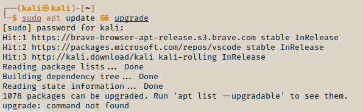

Installing & Updating Tools
In this session we will go over how to install some files, by the end you will have the confidence and knowledge to install packages, update & upgrade your Kali Linux.
Firstly we will update & upgrade our Linux.
apt update && apt upgrade

If you have a problem with the upgrade command, then you will need to try another method
If that doesn't run, please try the following:
sudo apt update -y && sudo apt upgrade -y

This will scan all the repositories in your machine and check if any files need to be updated. In the terminal it will display a list of packages that we can delete, install and upgrade. It will ask you to continue, click y and it will proceed to install the updates then any upgrades. Be patient, as it can take a while. We will also delete the unused files by enteriung the following:
sudo apt autoremove -y

It is reccomended to update and upgrade your Kali Linux often. Now that our machine is updated & upgraded, we can start installing some packages. First, we will install the Python Pip package. This is a package needed in Python to install Python packages whcih we will need later in the course.
I would like to stress that this is the industry standard to installing files, so this practice should be upheld regulary.
apt install python3-pip

Installs pip so you can insatll Python packages.
Install A Package from GitHub
Now we will install a package called pimpmykali from GitHub. This is a script that updates the latest version of kali Linux, getting rid of a lot of bugs and issues.
First we navigate to GitHub to find the repo: https://github.com/Dewalt-arch/pimpmykali. Copy the link to clone the repo.
Now open the terminal and switch the user to root.
sudo su

Navigate to the opt directory and clone the repo from GitHub. After downloading the cloned repo, now navigate to your pimpmykali directory.

Check the file for contents with ls -la. You should be able to locate the pimpmykali.sh file. This is the file we need to open.

To run the file enter./pimpmykali.sh then enter 0 when the file opens.
./pimpmykali.sh


Enter 0 to update your Linux
If this is your first time using the the pimpmykali app then enter n to activate the new setup option. When that has completed you can enter the 0 option to update your machine.
In the final stage of the set up select N when iot asks you if you want to install root.

With these quick steps you are able to install packages with apt and also clone & install repositores from GitHub
Installing Gedit
This is a simple text editor which you can use - like using nano. We will install this using the sudo command.
sudo apt install gedit

Similar to the nano command, to create a new file we first use the gedit command followed by the name of the new file we want to create.
gedit newfile.txt

It is not compulsory to use it feel free to use what you feel comfortable with!